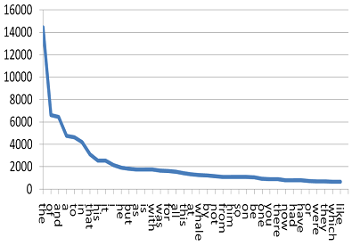

Zipf's law
is a statistical relationship named after the American linguist George Zipf, which describes
the inverse relationship between the frequency (tokens) of a word occuring in a given text and its rank
in a table of differnt word (type) frequencies.
Here is a prototypical type - token graph showing a Zipf's law:

Zipf's law also applies to many other rankings such as income rankings,
populations ranks of cities, and neuron firing rates. There are many explanations
for Zipf's law, including the
principle of least effort,
which Zipf believed was responsible.
Here, you can upload any text file (must be a .txt file) and can choose to display a graph of either
the tokens vs types of all words in the text file, or the tokens vs types of all words
in the file that are not found in the dictionary (unique words).
The project uses Javascript and HTML which I self-taught myself and independently created for this project.
It makes use of the efficiency of the O(1) insertion and search for Hashmaps over O(n) for arrays.
I first implemented this project using arrays and it took 2 minutes to compute the graphs, but with Maps it finishes
nearly instantaneously.
If you don't have any text files on hand, feel free to download any from
Project Gutenberg
After uploading a file, click either of the buttons below to display the corresponding type / token graph.
You must refresh the page to chose the other.